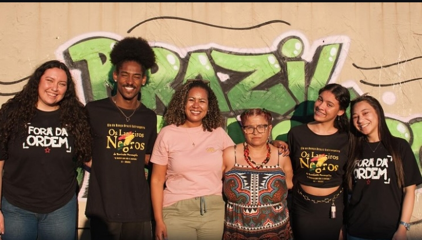

Brazil Estrangeiro:
muito além da dança.
Que foram esquecidos. No palco da Brazil Estrangeiro, eles voltavam a viver. Mas a Brazil Estrangeiro nunca foi só palco. Ela sempre foi também rua, comunidade, acolhimento...
Lá dentro, crianças, jovens e adultos aprendem dança, aprendem percussão, aprendem a se reconhecer. Nas oficinas, um tambor vira instrumento de autoestima. Uma coreografia vira aula de história. E quando a fome apertava, nasceu a Cozinha Solidária Ancestral, que levava comida, mas levava também afeto, ancestralidade e união pra quem mais precisava.
A Cia passou a circular por mostras, eventos comunitários, escolas e instituições, como o Campus Viamão do IFRS, levando a cultura negra pra onde ela precisava estar: perto das pessoas.
Foram mais de três décadas de luta, de dança, de resistência. Até que em 2026, a cidade reconheceu oficialmente o que o povo já sabia há muito tempo. A Câmara Municipal de Viamão, a partir de um projeto de lei do vereador Marco Antonio Borrega, aprovou e o município sancionou a Lei Ordinária nº 5.645/2026, reconhecendo o Instituto de Cultura Negra Brazil Estrangeiro como Patrimônio Cultural Imaterial de Viamão...
Ou seja, a Brazil Estrangeiro não é mais só uma companhia. Ela é patrimônio. Ela é história viva de Viamão. Tudo começou com um homem, em uma vila, num dia 20 de novembro. E hoje, é a história de uma cidade inteira que não vai ser mais apagada.
Voltar